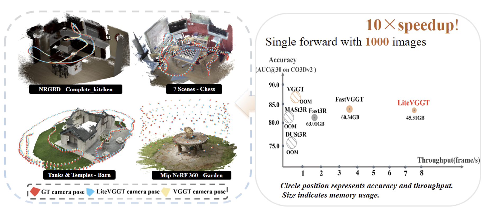
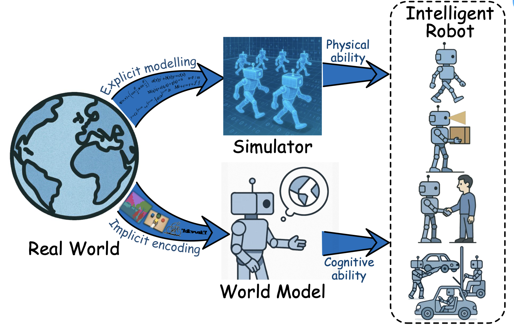
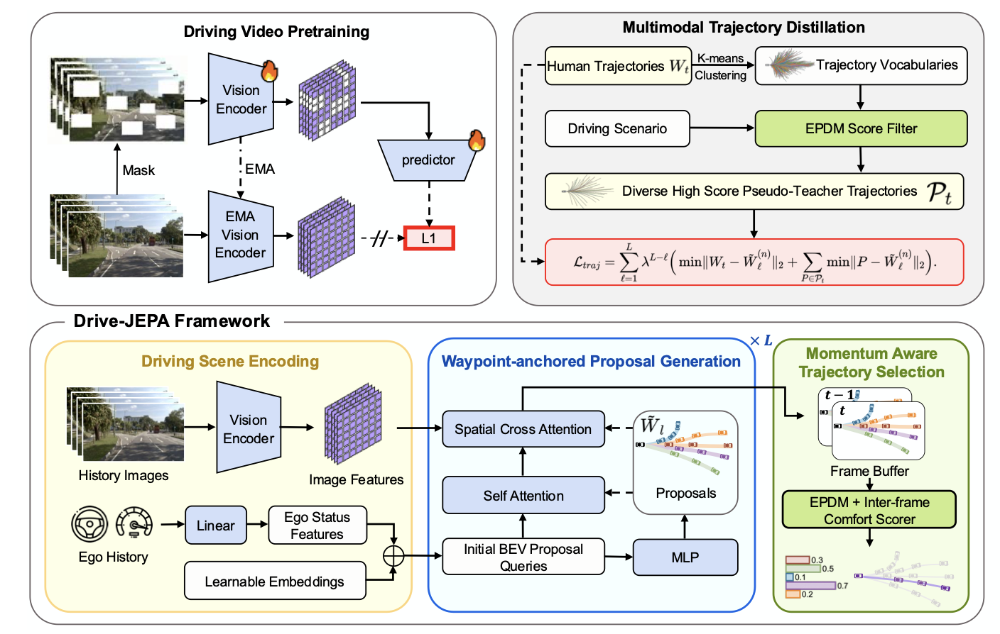

Selected Publications (full papers)
* Equal contributions; † Corresponding authors
Zhijian Shu*, Cheng Lin, Tao Xie, Wei Yin, Ben Li, Zhiyuan Pu, Weize Li, Yao Yao, Xun Cao, Xiaoyang Guo, Xiao-Xiao Long†
CVPR 2026
[WebPage]
[Paper]
[Code]


olatverse
OLATverse: A Large-scale Real-world Object Dataset with Precise Lighting Control
Xilong Zhou,
Jianchun Chen*,
Pramod Rao*,
Timo Teufel,
Linjie Lyu,
Tigran Minasian,
Oleksandr Sotnychenko,
Xiao-Xiao Long,
Marc Habermann,
Christian Theobalt
Arxiv
[WebPage]
[Paper]
[Code]


spatialvid
SpatialVID: A Large-Scale Video Dataset with Spatial Annotations
Jiahao Wang*,
Yufeng Yuan*,
Rujie Zheng*,
Youtian Lin,
Jian Gao,
Lin-Zhuo Chen,
Yajie Bao,
Yi Zhang,
Chang Zeng,
Yanxi Zhou,
Xiao-Xiao Long,
Hao Zhu,
Zhaoxiang Zhang,
Xun Cao,
Yao Yao†
CVPR 2026
[WebPage]
[Paper]
[Code]
[Data]


iris3d
Iris3D: 3D Generation via Synchronized Diffusion Distillation
Yixun Liang,
Weiyu Li,
Rui Chen,
Fei-Peng Tian,
Jiarui Liu,
Ying-Cong Chen,
Ping Tan,
Xiao-Xiao Long
ACM TOG 2025 [Paper]

embodied-world-models-survey
A Survey: Learning Embodied Intelligence from Physical Simulators and World Models
Xiao-Xiao Long,
Qingrui Zhao,
Kaiwen Zhang,
Zihao Zhang,
Dingrui Wang,
Yumeng Liu,
Zhengjie Shu,
Yi Lu,
Shouzheng Wang,
Xinzhe Wei,
Wei Li,
Wei Yin,
Yao Yao,
Jia Pan,
Qiu Shen,
Ruigang Yang,
Xun Cao,
Qionghai Dai
Arxiv
[Paper]
[Repo]


epona
Epona: Autoregressive Diffusion World Model for Autonomous Driving
Kaiwen Zhang*,
Zhenyu Tang*,
Xiaotao Hu,
Xingang Pan,
Xiaoyang Guo,
Yuan Liu,
Jingwei Huang,
Li Yuan,
Qian Zhang,
Xiao-Xiao Long,
Xun Cao,
Wei Yin†
ICCV 2025
[WebPage]
[Paper]
[Code]
[Model]

DOME: Taming Diffusion Model into High-Fidelity Controllable Occupancy World Model
Songen Gu*,
Wei Yin*†,
Bu Jin,
Xiaoyang Guo,
Junming Wang,
Haodong Li,
Qian Zhang,
Xiao-Xiao Long†
Arxiv
[WebPage]
[Paper]
[Code]




{kind=link}
{kind=link}
{kind=link}